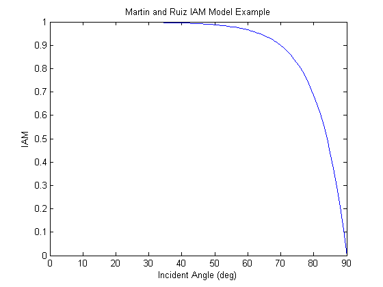

pvl_martinruiziam
Determine the incidence angle modifier using the Martin and Ruiz incident angle model
Contents
Syntax
- IAM = pvl_martinruiziam(ar, theta)
Description:
pvl_martinruiziam calculates the incidence angle modifier (angular factor) as described by Martin and Ruiz in [1]. The information required is the incident angle (theta) and the angular losses coefficient (ar). Please note that [1] has a corrigendum which makes the document much simpler to understand.
Inputs:
- ar - The angular losses coefficient described in equation 3 of [1]. This is an empirical dimensionless parameter. Values of ar are generally on the order of 0.08 to 0.25 for flat-plate PV modules. ar must be a numeric scalar or vector with all values > 0. If ar is a vector, it must be the same size as all other input vectors.
- theta - The angle of incidence between the module normal vector and the sun-beam vector in degrees. Theta must be a numeric scalar or vector. For any values of theta where abs(theta)>90, IAM is set to 0. For any values of theta where -90 < theta < 0, theta is set to abs(theta) and evaluated. A warning will be generated if any(theta<0 or theta>90).
Outputs:
- IAM - The incident angle modifier from [1]. The incident angle modifier is defined as [1-exp(-cos(theta/ar))] / [1-exp(-1/ar)], which is presented as AL(alpha) = 1 - IAM in equation 4 of [1]. Thus IAM is equal to 1 at theta = 0, and equal to 0 at theta = 90. IAM is a column vector with the same number of elements as the largest input vector.
Example
This example plots the IAM for glass over a range of incident angles.
ar = 0.15; % empirical losses coefficient of 0.15 theta = 0:90; %incident angle in degrees IAM = pvl_martinruiziam(ar, theta); figure plot(theta,IAM) xlabel('Incident Angle (deg)') ylabel('IAM') title('Martin and Ruiz IAM Model Example')
References:
- [1] N. Martin and J. M. Ruiz, "Calculation of the PV modules angular losses under field conditions by means of an analytical model", Solar Energy Materials & Solar Cells, vol. 70, pp. 25-38, 2001.
- [2] N. Martin and J. M. Ruiz, "Corrigendum to 'Calculation of the PV modules angular losses under field conditions by means of an analytical model'", Solar Energy Materials & Solar Cells, vol. 110, pp. 154, 2013.
See also
pvl_getaoi , pvl_ephemeris , pvl_spa , pvl_ashraeiam , pvl_physicaliam
Copyright 2014 Sandia National Laboratories